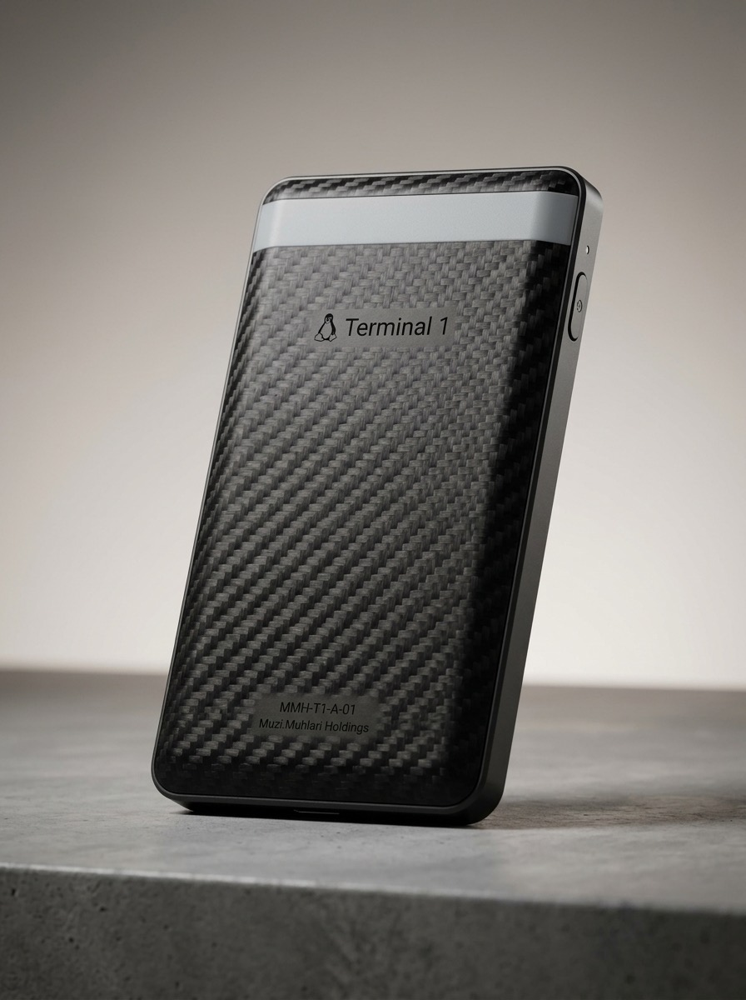

Terminal 1
terminal-1 – pocket Linux computer for working in a shell
A square screen, a BlackBerry keyboard and a Raspberry Pi in an 84 × 150 × 19 mm body of aluminium and carbon fibre. It boots to a terminal and stays there. Open source, designed in the open, not built yet.
SYNOPSIS
terminal-1 [ssh user@host] [az login --use-device-code] [claude] [git command] [tmux attach] …
- Screen
- 720 × 720 px
90 × 45 cells - Keyboard
- BlackBerry Q20
with trackpad - Compute
- Raspberry Pi CM4
4 GB · 32 GB - Body
- 84 × 150 × 19 mm
aluminium, carbon
STATUS Phase 0 of 5. Design files in progress; nothing built

DESCRIPTION
Terminal 1 boots to a shell and stays there.
There is no launcher, no app store and no notifications. Power it on and a full-screen terminal comes up. The keyboard types into it. That is the interface.
It does one job: working in a shell away from a desk. SSH into a server, sign in to Azure with a device code, pair with Claude Code, commit and push. Wi-Fi comes from the CM4; away from home, a phone's hotspot is just another network.
It is also a learning project. We buy the parts that would teach us little, the processor module and the keyboard, and design the boards, firmware, enclosure and Linux image around them. Everything is published as it is made.
Software, bottom to top
- Linux
- Raspberry Pi OS Lite, 64-bit, on the CM4.
- cage
- Kiosk compositor. One application, full screen.
- foot
- Wayland terminal. Small, fast, sharp text.
- zsh
- Your shell and your dotfiles.
- tmux
- Sessions that survive a dropped connection. The status line shows battery, Wi-Fi and time.
DISPLAY
Square, because a terminal is a grid.
A 4-inch IPS panel, 720 × 720 pixels. With an 8 × 16 pixel font that is 90 columns by 45 rows: a full prompt, a tmux split, a readable diff. Ten columns more than the 80 most tools assume, so nothing wraps.
| Diagonal | 4 in |
|---|---|
| Pixels | 720 × 720 |
| Cell | 8 × 16 px |
| Grid | 90 × 45 |
| Panel | IPS |
| Link | MIPI DSI, 4 lanes |
KEYBOARD
A BlackBerry Q20 keyboard, rewired for the shell.
The Q20 was made for messages, so it has no Ctrl, Esc, Tab or pipe. Our RP2040 firmware fixes that before Linux sees a key: the four phone keys become Ctrl, Esc, Tab and Fn, and an Fn layer adds the symbols a shell needs. Linux sees a plain USB keyboard and mouse. The key map is one file, and it changes without touching the OS.
- Ctrl Fn Shift
- Sticky. Tap once and the modifier waits for the next key; hold for the usual behaviour. Ctrl-C with one thumb.
- trackpad
- Arrow keys by default: shell history, the cursor, vim, tmux panes. Click is Enter. Mouse mode on request, with
terminal-1-ctl trackpad mouse. - Fn + W … 0
- F1 to F10, on the keys that print 1 to 0.
- sym
- Alt, or Meta, for Linux.
- alt
- The symbol printed on the next key, as BlackBerry intended.
HARDWARE
A Raspberry Pi behind the screen, a battery behind the keys, and two boards of our own around them.
- 14.0 mm
Front
Cover glass over the 4-inch square display. The Q20 keys and trackpad below.
- 21.2 mm
Mid-frame
Aluminium, matte black. Carries the screen, keyboard and boards; a thermal pad takes the CM4's heat into it.
- 31.6 mm
Boards
The carrier board with the CM4, behind the screen. The keyboard and power board, behind the keys.
- 48.5 mm
Battery
One protected 1S lithium-polymer cell, 855570, 4,000–4,500 mAh, in its own bay with room to swell.
- 51.2 mm
Back
Carbon fibre, with a fibreglass radio window across the top for Wi-Fi and Bluetooth.
Boards
| Board | Size | Layers | Carries |
|---|---|---|---|
| Carrier hardware/carrier-board | 74 × 72 mm | 4, impedance controlled | Raspberry Pi CM4 (4 × Cortex-A72, 4 GB, 32 GB eMMC, Wi-Fi). 22-pin DSI display connector. PCF85063A clock with coin cell. U.FL lead to the flex antenna. Serial console pads. |
| Keyboard and power hardware/keyboard-board | 74 × 60 mm | 2 | RP2040. Q20 keyboard and trackpad. BQ25895 charger with power path, TPS61089 5 V boost, MAX17048 fuel gauge. USB-C with a service-mode switch. Power button. |

Materials
The mid-frame is aluminium: it is the spine, and the heat sink. The back is woven carbon fibre, made in-house from a printed mould. Carbon also stops radio, so a strip of fibreglass across the top lets Wi-Fi and Bluetooth out, with the antenna right behind it.
Power
One USB-C port. The charger's power path feeds a separate 5 V boost for the CM4, so the device runs while it charges. Long-press the power button and the RP2040 asks Linux to shut down, waits for it to halt, then cuts the power. There is no sleep mode: it is on, or it is off.
Expect 4 to 6 hours of terminal use per charge. That is an estimate until a battery has actually run down.
MODEL
Unlike the renders, this one is real.
The Onshape assembly, exported as glTF. FeatureScript builds it from the same numbers as the circuit boards, so if the CAD fits, the boards fit. Drag to turn it over.
Drag to turn · scroll or pinch to zoom
3D model coming with the first CAD export
- Title
- Terminal 1, assembly
- Source
- Onshape FeatureScript
- Format
- glTF binary
- Units
- mm
Open the live CAD document in Onshape (opens in a new tab) Public. Measure parts, read the FeatureScript, copy it.
SPECIFICATIONS
Targets for the first prototype. The last column says where each number comes from: datasheet from a part's datasheet, CAD from the Onshape model, est. a hand estimate, target what we are aiming for, verify still to be confirmed against the part in hand. Nothing here has been measured.
| Parameter | Value | Unit | Source |
|---|---|---|---|
| Display | |||
| Diagonal | 4 | in | |
| Resolution | 720 × 720 | px | |
| Text grid, 8 × 16 font | 90 × 45 | cells | |
| Panel, interface | IPS, MIPI DSI | verify | |
| Input | |||
| Keyboard | BlackBerry Q20, with trackpad | ||
| Controller | RP2040, USB HID | ||
| Shell keys | Ctrl, Esc, Tab, Fn; sticky modifiers | ||
| Compute | |||
| Module | Raspberry Pi CM4 | datasheet | |
| Processor | 4 × Arm Cortex-A72 | datasheet | |
| Memory | 4 | GB | |
| Storage, eMMC | 32 | GB | |
| Wireless | Wi-Fi, Bluetooth | datasheet | |
| Mobile data | none; Terminal 2 | ||
| Power | |||
| Battery, 1S Li-Po 855570 | 4,000–4,500 | mAh | est. |
| Use per charge | 4–6 | h | est. |
| CM4 supply, boost | 5.08 | V | |
| Charging | USB-C, BQ25895 | ||
| Mechanical | |||
| Size, W × H × D | 84 × 150 × 19 | mm | CAD |
| Mass, from material densities | 291 | g | CAD |
| Mass, target | 250–300 | g | target |
| Corner radius | 9 | mm | CAD |
| Frame | Aluminium, matte black | ||
| Back | Carbon fibre, radio window | ||
| Software | |||
| Operating system | Raspberry Pi OS Lite, 64-bit | ||
| Session | cage, foot, zsh, tmux | ||
| Tools | OpenSSH, Azure CLI, Node.js 22, Claude Code, git | ||
Figures come from datasheets, the CAD model and hand calculations, and will change when the prototype is measured. BlackBerry is a trademark of its owner; Terminal 1 uses the Q20 keyboard as a part and is not affiliated with or endorsed by BlackBerry.
ROADMAP
Six phases, each ending at a gate. Weeks are estimates; the gates are not.
Log
- Prototype plan, v1.0.
- First design pass: Onshape model of the full stack; carrier board schematic, ERC clean.
- Keyboard firmware and Linux setup written and unit tested, not yet run on hardware. This site.
Plan
-
0
Bench prototype we are here
Weeks 1–3. CM4 on its official IO board, the Q20 on a Raspberry Pi Pico, the screen on the desk. Parts not ordered yet.
Gate: SSH,
az loginand Claude Code from the bench keyboard. -
1
Keyboard and power board
Weeks 3–6. Our first RP2040 board runs the bench CM4 from a battery.
Gate: reliable typing, safe charging, clean shutdown from the power button.
-
2
Carrier board
Weeks 6–12. Four layers, display, USB, clock and antenna.
Gate: boots from the battery with the screen and Wi-Fi working.
-
3
Enclosure
Weeks 8–14. Printed shells, then the aluminium mid-frame and the carbon back.
Gate: fits a jacket pocket, stays cool, Wi-Fi works with the back on.
-
4
Daily driver
Weeks 14–18. Battery life, disk encryption, the key map refined by use.
Gate: two weeks without reaching for the laptop.
-
5
Terminal 2
Later. A mobile modem, a bigger battery, an optional CM5, and what it takes to sell one.
BUGS
This manual describes a device that does not exist yet.
- Not built
- Nothing has been built or tested. Phase 0 parts are not ordered. There is nothing to buy.
- Estimates
- Every number is an estimate or a target until it is measured. The specifications say which.
- Renders
- Figures 1 and 5 are not photographs. They are concept renders from an AI image model. The 3D model is the real CAD.
- Vibe coded
- Terminal 1 is designed with an AI coding assistant, Claude Code. The plan, the FeatureScript, the schematics, the firmware, the Linux setup and this website start as conversations. A person reviews every change before it lands.
- AI mistakes
- AI-written details, part numbers, pinouts, register values, can be wrong. Unconfirmed values are marked verify and checked against datasheets, ERC and DRC before anything is ordered. Every design decision gets a short written record.
- Reporting
- Found one? Open an issue
FILES
Open, all the way down.
The CAD, the circuit boards, the firmware, the Linux image and the documents are all public. Build one, change it, or help make the first one real.
terminal-1/ ├── hardware/enclosure/ Onshape FeatureScript, build sheet ├── hardware/carrier-board/ KiCad: CM4 carrier, 4 layers ├── hardware/keyboard-board/ KiCad: keyboard and power, 2 layers ├── firmware/keyboard-board/ C: RP2040, Pico SDK, TinyUSB ├── linux/ image, config, status daemon ├── system/plan/ product plan; interfaces.md, the numbers ├── docs/decisions/ why each choice was made ├── website/ this page └── LICENSES/
| Hardware | CERN-OHL-S-2.0 | Strongly reciprocal. Make it and sell it; share your changes to the design. |
|---|---|---|
| Software, firmware | MIT | Use it for anything. Keep the notice. |
| Documentation | CC BY-SA 4.0 | Share and adapt, with credit, on the same terms. |
SEE ALSO
Contributing
- Pick an issue. Start with one labelled
good first issue, or open one for anything that looks wrong. - Say so. Comment on the issue so nobody duplicates the work. Ask anything.
- Keep it small. A focused pull request. AI-assisted work is welcome: say so, and check it yourself.
- Write it down. Bigger design changes get a short decision record in
docs/decisions.
- github(1)The repository. Star it to follow the build.
- onshape(1) (opens in a new tab)The live CAD document.
- decisions(7)Decision records: what was chosen, and why.
- product-plan(7)The living plan, with costs and risks.
- contributing(7)How to help, in full.